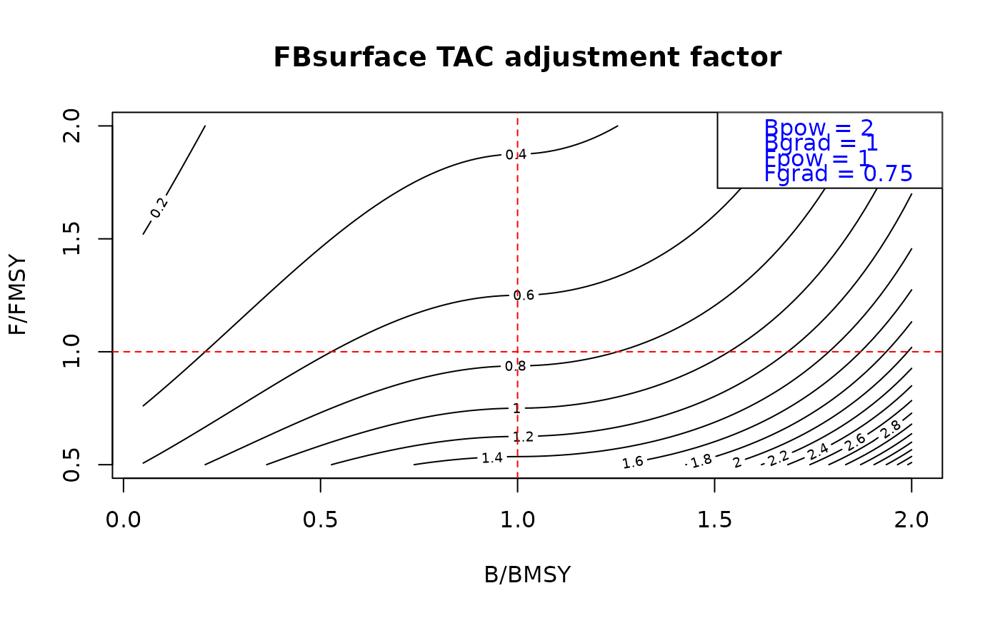

A Harvest Control Rule using B/BMSY and F/FMSY to adjust TAC or TAE.
Arguments
- Brel
improper fraction: an estimate of Biomass relative to BMSY
- Frel
improper fraction: an estimate of Fishing mortality rate relative to FMSY
- Bpow
non-negative real number: controls the shape of the biomass adjustment, when zero there is no adjustment
- Bgrad
non-negative real number: controls the gradient of the biomass adjustment
- Fpow
non-negative real number: controls the adjustment speed relative to F/FMSY. When set to 1, next recommendation is FMSY. When less than 1 next recommendation is between current F and FMSY.
- Fgrad
improper fraction: target Fishing rate relative to FMSY
Examples
res <- 100
Frel <- seq(1/2, 2, length.out = res)
Brel <- seq(0.05, 2, length.out=res)
adj <- array(HCR_FB(Brel[rep(1:res, res)], Frel[rep(1:res, each = res)],
Bpow = 2, Bgrad = 1, Fpow = 1, Fgrad = 0.75), c(res, res))
contour(Brel, Frel, adj, nlevels = 20, xlab = "B/BMSY", ylab = "F/FMSY",
main = "FBsurface TAC adjustment factor")
abline(h = 1, col = 'red', lty = 2)
abline(v = 1, col = 'red', lty = 2)
legend('topright', c("Bpow = 2", "Bgrad = 1", "Fpow = 1", "Fgrad = 0.75"), text.col = 'blue')
